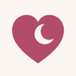

NuzzleSupport
Something not working, or an idea to make Nuzzle better? We'd love to hear from you.
Email admin@quick-quote.com.au
Common questions
How do I share feeds with my partner's phone?
On the first phone, open Settings, then Backup and sharing, and start sharing. Then on the second phone, open Settings, Backup and sharing, Join with a code, and type the family code. Sharing is part of Nuzzle Plus.
I got a new phone. How do I get my feeds back?
If backup was on, install Nuzzle, open Settings, Backup and sharing, Join with a code, and type your family code. Without backup, feeds live only on the old phone.
The reminder doesn't go off.
Check that notifications for Nuzzle are allowed in your iPhone's Settings, then Notifications, then Nuzzle. In Nuzzle, make sure the reminder is on in Settings.
How do I add the widget or the lock screen timer?
Touch and hold your home screen or lock screen, tap Edit or Customise, then add Nuzzle. The lock screen timer appears by itself while you feed. If it doesn't, check Settings, Nuzzle, Live Activities.
How do I restore Nuzzle Plus?
Open Settings, then Nuzzle Plus, then Restore. Use the same Apple ID you bought it with. A purchase for life is shared with your Apple family.
How do I cancel the monthly plan?
On your iPhone open Settings, tap your name, then Subscriptions, then Nuzzle. Cancel at least 24 hours before the month ends.
How do I delete my data?
Records on your phone are removed when you delete them or delete the app. To remove the online backup, open Settings, Backup and sharing, Delete the online backup. See our privacy policy for more.
Nuzzle is a record keeping tool, not medical advice. If you're worried about feeding, weight or nappies, talk to your child health nurse, midwife or doctor.